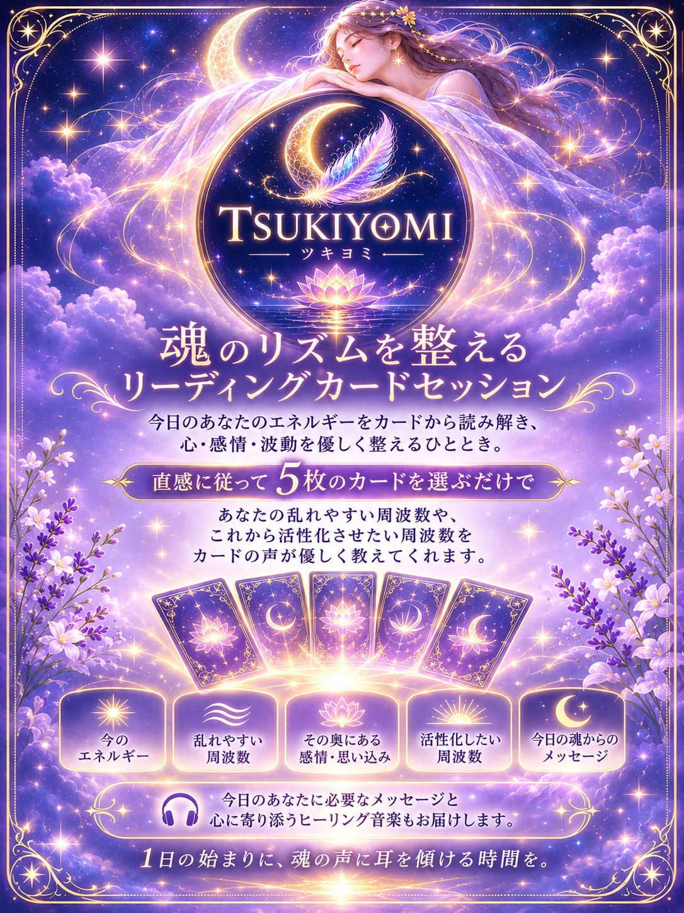

TSUKIYOMI ツキヨミ 魂のリズムを整えるリーディングカードセッション

ゆっくり吸って、ゆっくり吐いて。
心が静かになったら、今日のあなたに届くカードを呼んでね。
Choose One
今日のあなたのために、カードを混ぜているよ。
深呼吸をしながら、待っていてね。

ゆっくり吸って、ゆっくり吐いて。
心が静かになったら、今日のあなたに届くカードを呼んでね。
今日のあなたのために、カードを混ぜているよ。
深呼吸をしながら、待っていてね。